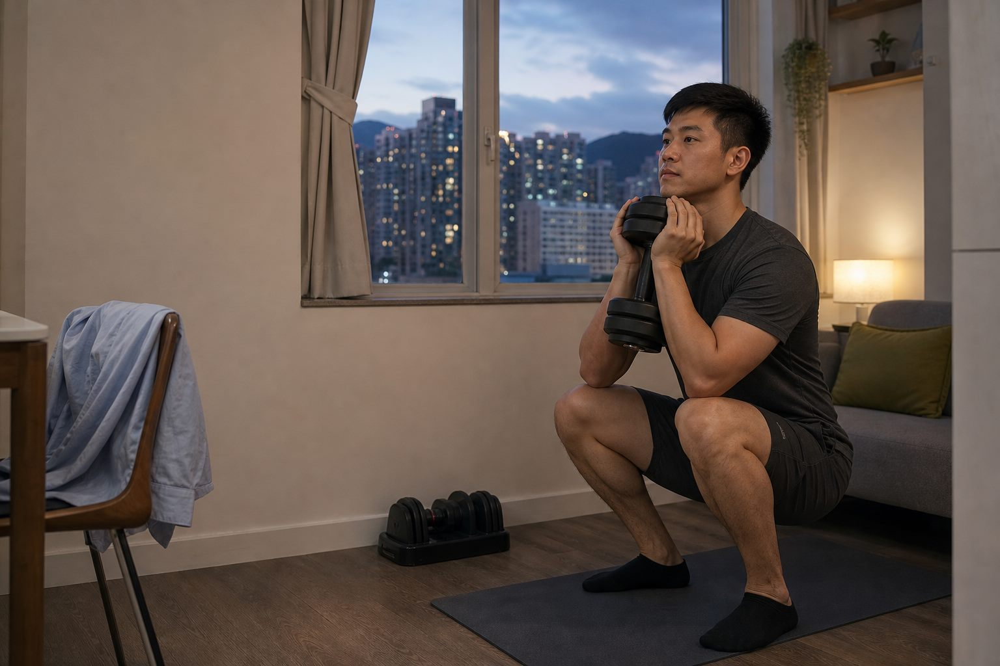

正在準備今日行程
請稍候。

先選你今晚的真實狀態。網站會記住勾選進度，下次打開仍然在。
請稍候。
力量訓練放在星期一及四，跑走放在星期二及六，中間留恢復日。按日子可切換今日清單。
乳酪、蛋、奶或無糖豆漿，任何一款都可以。
午餐後繞一圈，忙時拆成兩次五分鐘。
正常、OT 或有活動。不要回家後再跟自己談判。
訓練日開做，非訓練日散步後便完成。
每組做到還可以再做約兩下便停。當所有組都做到次數上限，下次才加最小重量。
每次上限 45 分鐘。 熱身 5 分鐘，組間休息 60-90 秒。
每個動作做 40 秒，休息 20 秒。做兩圈，不追重量。
作為恢復或跑走替代，不必與跑步疊加。先平路熱身 3 分鐘，再用斜度 5-8%、速度約 4-5 km/h；以仍能說完整句子為準。
ENDURANCE / BEGINNER
你不需要快，也不需要一次跑很遠。固定星期二及星期六做兩次跑走，兩課之間至少隔一天；能講完整句子就是合適強度。
日期計劃：2026/9/12–12/31。 每課是 5 分鐘步行熱身＋下表主段＋5 分鐘步行收操；「總計」已包括前後步行。全程慢到可講完整句子，不追固定 9 分鐘／公里。
目前基準（9/12 起）：星期二 3 分鐘跑＋1 分鐘行 × 4（主段 16／總計 26 分鐘）；星期六同樣間歇 × 5（主段 20／總計 30 分鐘）。
升級條件：上一階段的星期二、星期六都能以對話配速完成，且兩次翌日恢復正常，才試下一階；每階只改一課的跑段長度，步行休息仍為 1 分鐘。未達條件就重做或退回一階，完全不算失敗。
12 月的目標是累積約 30 分鐘「跑步時間」，可以是階段 8 的跑走；連續 30 分鐘要等跑走已經輕鬆、翌日也正常後，再於之後逐步合併跑段。5K 是更後面的目標，不承諾 12/31 前完成。
若明顯喘、翌日仍很疲累、動作變形或有痛楚：下一課重做上一階，必要時主段少一組；當週跳過斜坡行及補堂，力量訓練只保留舒服的重量。OT 最低版是行 5-10 分鐘或休息，不要把漏掉的跑步一次補回。
一般跑走原則參考 NHS Couch to 5K ↗；以上是按每週兩次及你的作息改寫，不是 NHS 原定課表。
先把蛋白質吃夠，再少一份液體熱量或宵夜。按一下可換一組外賣及便利店組合。
雞、魚、蛋、豆腐、乳酪、奶或無糖豆漿。份量約一至兩個掌心。
每日少一杯有糖飲品、少一份醬汁或少一次宵夜，不要一次戒清所有食物。
先吃菜及肉，再吃飯。飯先留約四分一，仍然餓才吃完。
正常吃晚餐便可。太夜就選奶或豆漿加香蕉，不需要獎勵餐。
固定在星期日早上量度。腰圍必填，體重選填；同一日期再次儲存會更新原有紀錄。
尚未有紀錄
先在舊裝置匯出，再於新裝置匯入。匯入會合併紀錄，不會刪除新裝置已有資料。
每日勾選及量度會自動存在目前瀏覽器。清除瀏覽器資料前，請先匯出備份。
身體重組看腰圍與力量，不只看體重。每週同一時間記錄一次，避免每日情緒被數字牽着走。